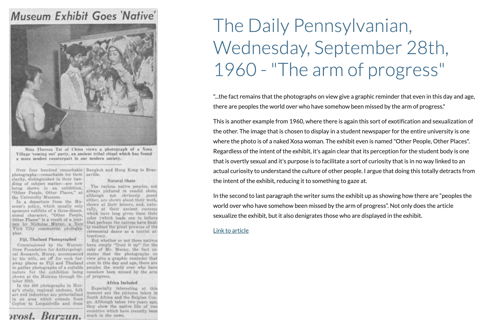
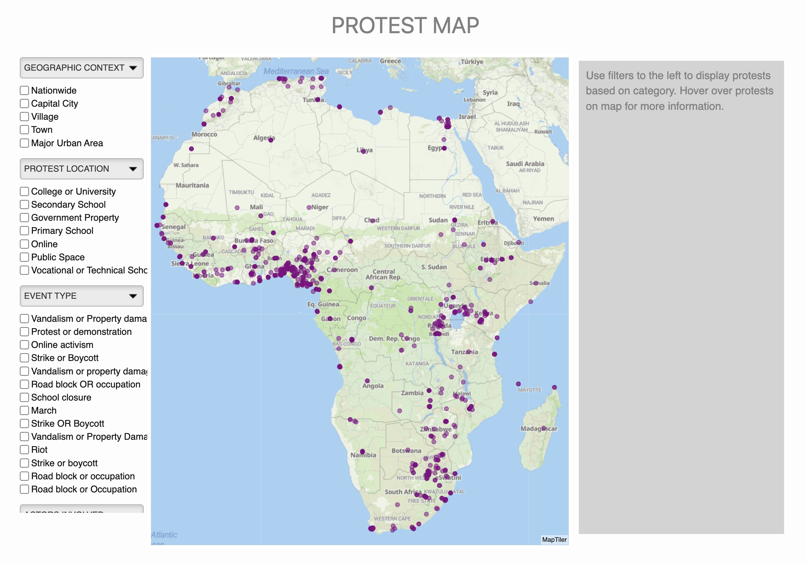
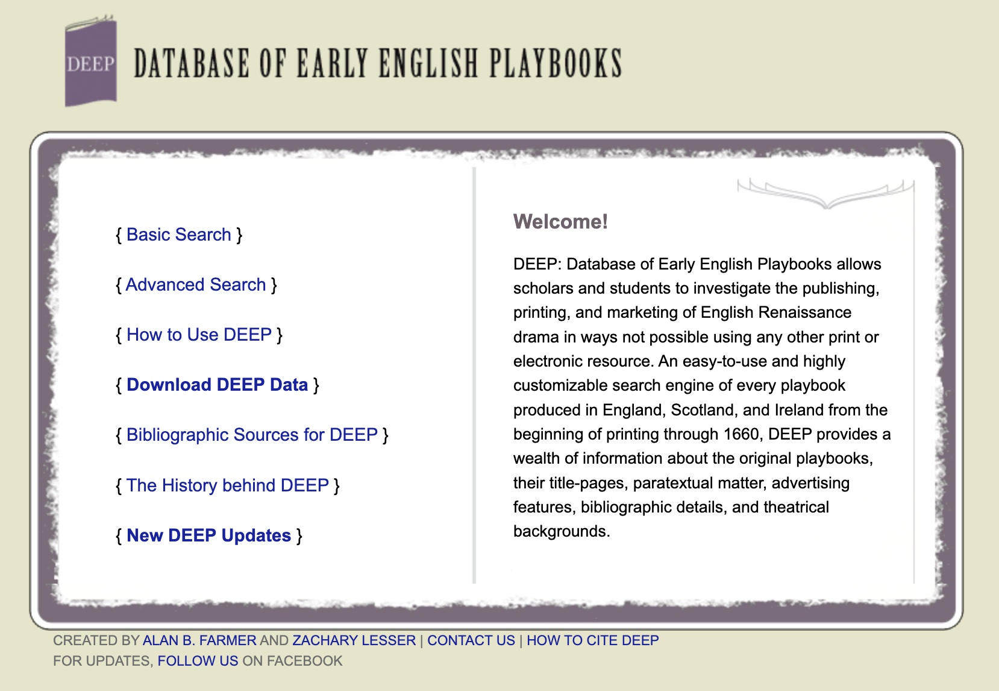
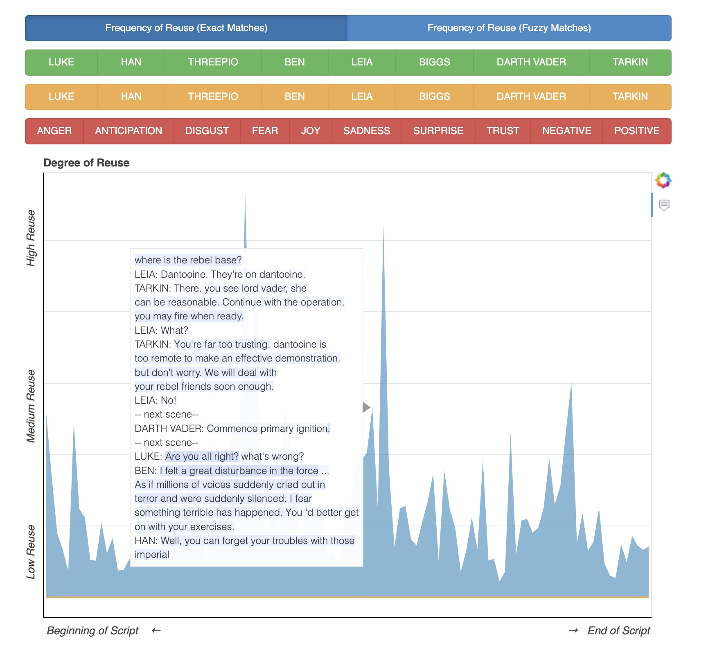
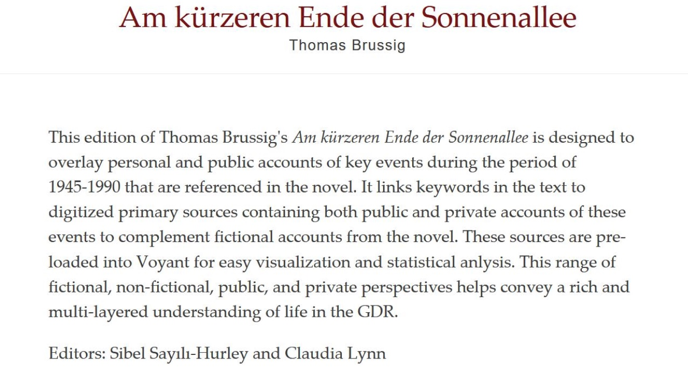
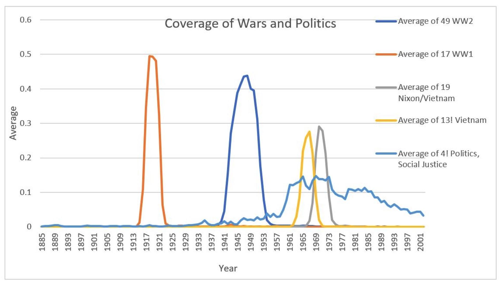

Projects at Penn Digital Scholarship
Below is a portfolio of the digital projects that I worked on while at Penn.
The Penn Museum through The Daily Pennsylvanian
Fall 2020
 One digital artifact in the exhibit: a Penn Museum artifact and a Daily Pennsylvanian article.
“The Penn Museum through The Daily Pennsylvanian” was a public history exhibit I made for the final project of ENGL 253: Tpcs 19th-c American Lit: Rare, Curious, And Wild: Science And Cultures Of Collecting. Through the generous work of Penn Libraries, we have open access to The Daily Pennsylvanian Archives, giving us digitized articles dating back to its first issue in 1885. The Penn Museum was founded in 1887 when it began its first expedition to Nippur. This gives us the unique opportunity not only to trace the Penn Museum’s beginnings in the late 19th century through the Daily Pennsylvanian, but also to specifically to examine how it was being written about, and the language used to describe the museum and its funded archaeological excavations. I created this exhibit to analyze the language of Penn students through the newspaper, on topics that are evocative of colonialism, collecting, and museum studies. You can view the exhibit here.
Mapping Youth Protest in Africa
Summer 2020 | GIS, Python, Javascript, HTML, Bokeh, Jekyll
 The interactive map plotting school protests in Africa
Mapping Youth Protest in Africa is a Digital Scholarship project run through the Price Lab of Digital Humanities and Penn Libraries. The project is focused on taking a dataset of high school and university protests in Africa and visualizing it on a webpage. It first involved using GIS Mapping with Python, Docker, and Jekyll in order to generate visualization pages automatically. Then, we continued to use the visualization library Bokeh and Javascript in order to customize and add features to the map. You can visit a demo here.
Database of Early English Playbooks
Summer 2020 | Django, SQL, Docker, Python
 The front page of the Database of Early English Playbooks project
The Database of Early English Playbooks is a project that is collecting storing the titles and metadata of Early English Playbooks. Our ongoing project is to update the old site and database (pictured above) into a new database using Django and SQL, and eventually a new website interface as well. Throughout this project, I helped build the Django framework for the database, and assisted with the population and cleaning of the database. You can view the Github page here and the old website here.
Measuring Fan Engagement
Summer-Fall 2019 | Python, Javascript, Bokeh, Jekyll
 Visualization of Star Wars fanfiction in an interactive graph format
The Fan Engagement Meter identifies lines of film dialogue that fans most like to repeat, rewrite, revise, and riff on. More specifically, this project uses data visualization to see when a fandom’s fanfiction writers reuse exact parts of the fandom’s movie script. We detected emotion to try and correlate which emotive parts of the script users were more likely to reuse and visualized the results through Bokeh. I primarily worked on the data visualization for the website, using a library called Bokeh, which uses Python and JS code to visualize the reuse data sets. The final website was run through Jekyll. You can view the project here.
text/book
Summer 2019 | Python, Docker, Django, Jekyll, Traefik, Node
 Summary of the project text when used with a German novel
text/book was created by the Penn Libraries Digital Scholarship team, in collaboration with the Price Lab for Digital Humanities. This tool allows you to analyze a companion corpus (texts, or newspaper articles etc) within the context of a specific document (book). This project was created as a full stack web tool, which included Django, Python, Jekyll, all wrapped in Docker. It used the Voyant text analysis tool as a way to look at articles in reference to a specific text. You can view the project Github page here.
Topic Modeling the Daily Pennsylvanian
Spring 2019 | Python, MALLET
 Line graph display of a topic model output
This was a topic modeling project I worked on as my first foray into the Digital Humanities. The dp archives topic model was created for the final project for the class, Introduction to Digital Humanities taught by Scott Enderle in Spring 2019. The topic modeling tool was used on the files scraped by this project. The early code for this was written in a jupyter notebook. After completion of the project, I decided to make it a python executable script for those who want to access the daily pennsylvanian archive for educational purposes. You can view the project here.